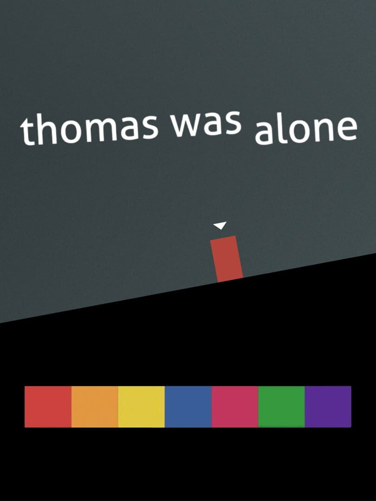

|  | |
| Playtime | Not Played |
| Last Activity | Never |
| Added | 25/12/2022 22:56:52 |
| Modified | 18/05/2025 0:38:13 |
| Completion Status | Not Played |
| Library | Steam |
| Source | Steam |
| Platform | PC (Windows) |
| Release Date | 24/07/2012 |
| Community Score | 71 |
| Critic Score | 76 |
| User Score | |
| Genre | Adventure Indie Platform Puzzle Strategy |
| Developer | Bithell Games |
| Publisher | Ant Workshop Ltd Bithell Games Curve Digital |
| Feature | Single Player |
| Links | Steam Wikipedia iPhone Official Website Android iPad Wikia Twitch |
| Tag | 2D 2D Platformer Atmospheric Casual Colorful Family Friendly Indie Linear Minimalist Mystery Narration Philosophical Physics Platformer Precision Platformer Puzzle Platformer Sci-fi Side Scroller Singleplayer Story Rich |